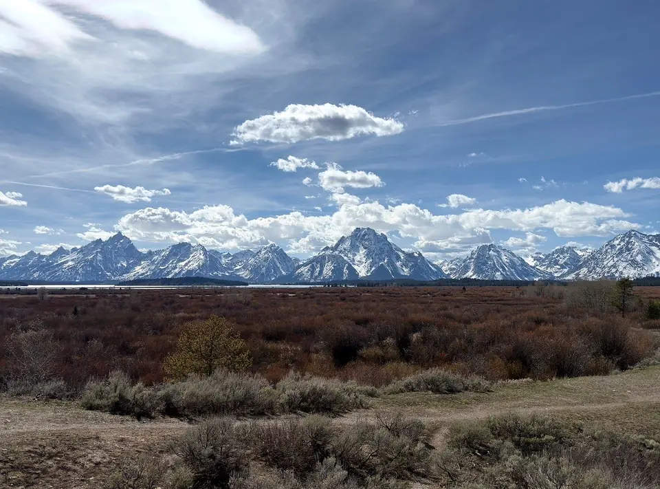
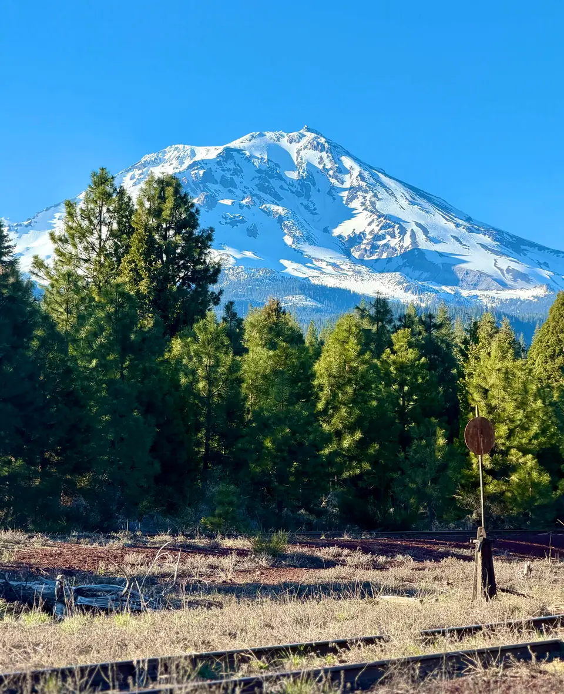
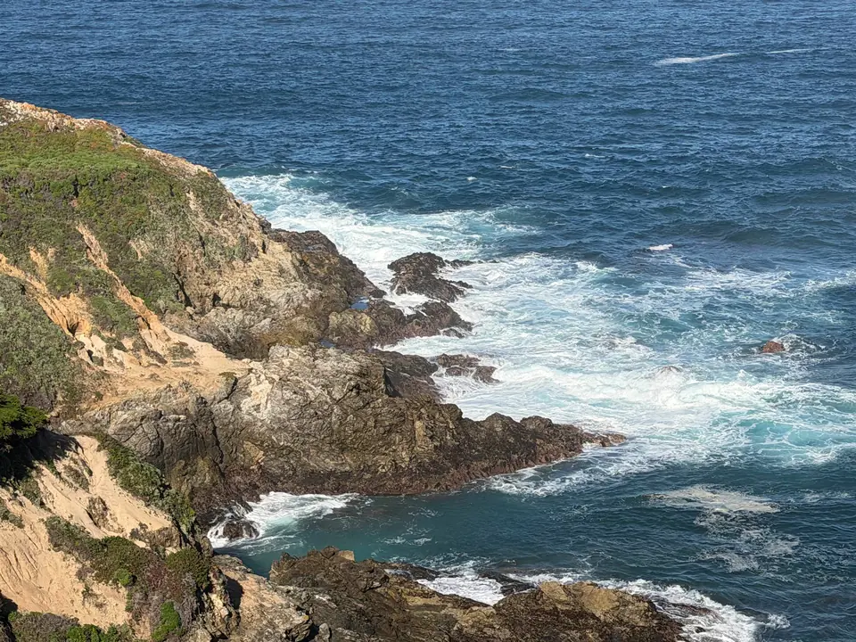
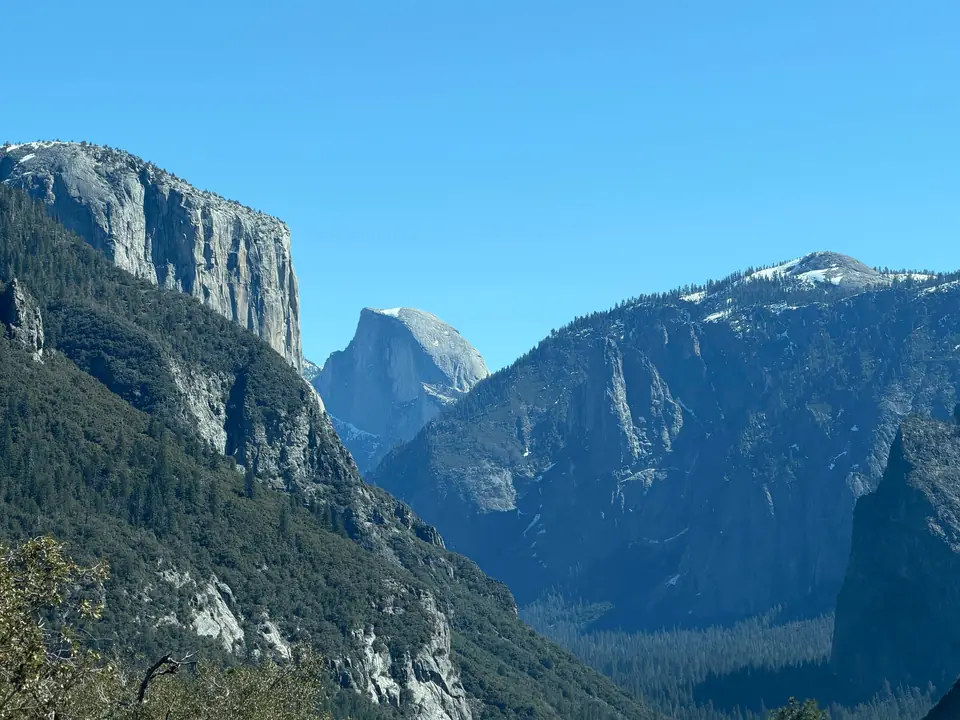
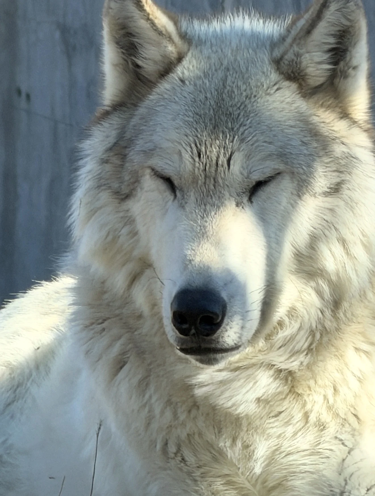
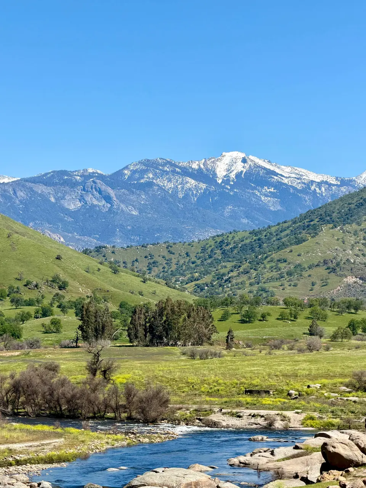
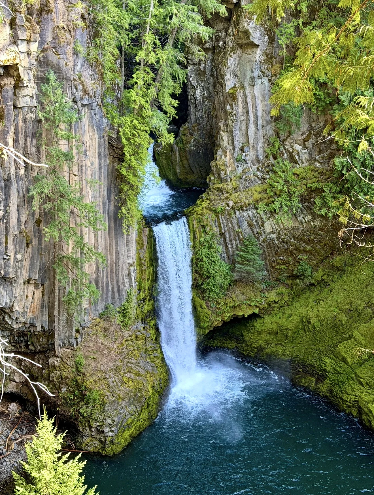

High CountryGrand Teton, Wyoming
Mountain ClearingMount Shasta, California
Breaking WavesBig Sur, California
Valley ViewYosemite, California
WolfWildlife
Valley StreamKern River, California
Toketee FallsOregonSwipe to explore the photographs
Two trips, same map.
The first was a completely spontaneous trip with my dog. I packed everything I had and hit the road for nine days. The second was more planned and gave me a taste of pure freedom, from the Pacific coast to the Mountain West. Every line on the map follows the roads I drove.


Roads © OpenStreetMap contributors
From shore
to crest.
The photographs here are mine. You can find selected prints at Shorecrest.